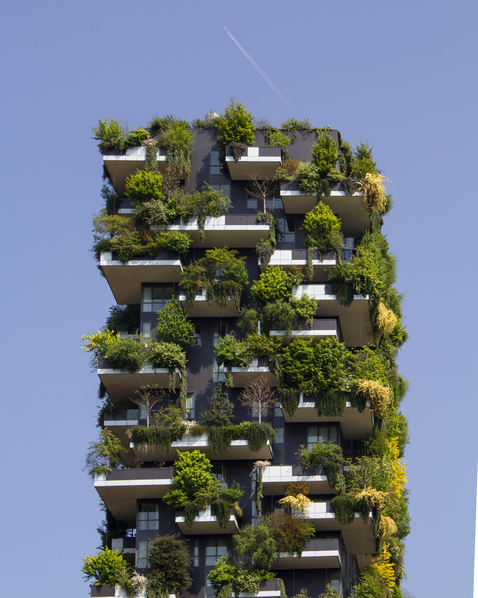
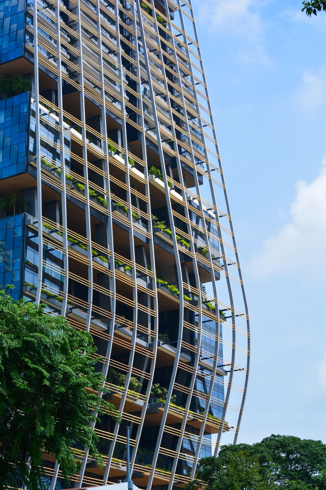

Green Buildings
Click left side for navbar
Introduction
In an era marked by growing environmental concerns and the urgent need for sustainable solutions, the concept of green buildings has emerged as a beacon of hope for a greener, more resilient future. Green buildings, also known as sustainable buildings or eco-friendly structures, are designed and constructed with a focus on reducing environmental impact, conserving resources, and improving occupants' well-being.
What are Green Buildings?
Green buildings, also known as environmentally conscious buildings or ecologic structures, are planned and built with the goal of decreasing environmental impact, saving resources, and increasing the well-being of its occupants. They put energy efficiency first by integrating technology and developing methods to reduce energy usage and carbon emissions. Green buildings also stress resource conservation by utilizing water management systems, environmentally friendly materials, and renewable energy sources. They also focus indoor air quality, include biophilic design aspects, and help to the development of sustainable communities and cities. Green buildings are valued for their environmental advantages, financial savings, and promotion of a more sustainable future.
Pros and Cons of Green Buildings
Pros
- Green buildings are energy-efficient
- Higher fraction of eco-friendly materials
- Reduction in waste
- Efficient recycling
- Reduction in greenhouse gas emissions
- Protection of natural resources
Cons
- High initial costs
- Funding problems for green buildings
- Not suitable for all locations
- Maintenance may be difficult
- Energy supply may vary depending on weather conditions
- Possible technology problems
Frequently Asked Questions (FAQs) About Green Buildings
Why are Green Buildings Helpful?
Green buildings are beneficial for a variety of reasons. To begin with, they have a substantially lower environmental effect than traditional structures. They utilize less energy, preserve resources such as water and materials, and reduce greenhouse gas emissions, all of which contribute to a more sustainable future. Second, green buildings have an emphasis on energy efficiency, lowering energy usage and utility expenses. This not only improves the environment but also saves owners and tenants money in the long run. Finally, green buildings provide more healthy and comfortable indoor settings. They focus interior air quality, include natural lighting and ventilation, and employ low-emission materials, all of which improve the well-being and productivity of inhabitants. Green buildings, in general, serve an important role in reducing climate change, preserving resources, and developing sustainable and livable communities.
How sustainable is one Green Building?
Green buildings are designed to be highly sustainable. They prioritize sustainability throughout their lifecycle, from construction to operation and eventual demolition or renovation. While no building can be completely free of environmental impact, green buildings strive to minimize their ecological footprint and provide a more sustainable alternative to conventional construction. They are designed to achieve a balance between environmental responsibility, resource efficiency, occupant health, and long-term economic viability.
Why is it called a Green Building?
A green building is so named because it focuses on environmental sustainability and limiting its environmental effect. In this context, the term "green" refers to techniques and ideas that encourage a more sustainable and environmentally friendly approach to building design, construction, and operation. These structures place a premium on energy efficiency, resource conservation, and the utilization of renewable energy sources, all of which contribute to a greener and more ecologically conscious built environment. The term "green building" refers to a company's dedication to designing structures that are environmentally conscious and strive toward a more sustainable future.
How do Green Buildings affect climate change?
Green buildings have a significant impact on mitigating climate change. Here are some ways in which green buildings contribute to reducing greenhouse gas emissions and combating climate change:
1. Energy Efficiency: Green buildings prioritize energy efficiency through various design strategies and technologies. They incorporate features such as effective insulation, energy-efficient appliances, and advanced HVAC systems. By reducing energy consumption, green buildings decrease the demand for electricity generated from fossil fuels, which are major contributors to greenhouse gas emissions.
2. Renewable Energy Integration: Many green buildings incorporate renewable energy sources like solar panels, wind turbines, or geothermal systems. By generating clean and renewable energy on-site, these buildings reduce reliance on fossil fuels and decrease greenhouse gas emissions associated with conventional energy production.
3. Reduced Carbon Footprint: Green buildings minimize their carbon footprint by adopting sustainable construction practices and utilizing eco-friendly materials. They prioritize the use of recycled materials, reduce construction waste, and employ energy-efficient building techniques. By optimizing resource use and minimizing waste generation, green buildings help reduce the overall carbon emissions associated with the construction industry.
4. Water Conservation: Green buildings integrate water-saving technologies and practices. They incorporate efficient fixtures, rainwater harvesting systems, and graywater recycling. By reducing water consumption and promoting sustainable water management, green buildings indirectly contribute to mitigating climate change. This is because energy is required for the extraction, treatment, and distribution of water, and by reducing water demand, energy consumption is also reduced.
5. Sustainable Urban Development: Green buildings play a crucial role in sustainable urban development. By promoting compact and walkable communities, green buildings reduce the need for long commutes, which in turn reduces transportation-related emissions. Additionally, green buildings contribute to the creation of more sustainable and resilient cities by focusing on factors such as urban heat island mitigation, green spaces, and stormwater management.
Collectively, these actions and practices in green buildings help reduce greenhouse gas emissions, conserve energy and water resources, and promote a more sustainable and low-carbon built environment. By adopting green building practices on a larger scale, we can make a significant positive impact on mitigating climate change and creating a more sustainable future.
How are Green Buildings related to smart growth and development?
Green buildings are closely related to smart growth and development as they promote compact, mixed-use development, transportation efficiency, energy and resource efficiency, and community engagement. Green buildings align with the principles of smart growth by creating sustainable and livable communities that prioritize environmental stewardship, economic vitality, and social equity. They contribute to efficient land use, reduce dependence on cars, conserve resources, and involve community input, ultimately fostering sustainable and inclusive urban development.
Fun Facts About Green Buildings
- The world's largest green building is The Edge, located in Amsterdam, Netherlands. It received the highest sustainability rating (98.36%) ever recorded by the Building Research Establishment Environmental Assessment Method (BREEAM).
- The Bullitt Center in Seattle, Washington, is often referred to as the "greenest commercial building in the world." It produces more energy than it consumes, thanks to its solar panels and energy-efficient design.
- The Bank of America Tower in New York City is one of the most energy-efficient skyscrapers in the world. It uses a co-generation system that converts waste heat into electricity, reducing its carbon footprint.
- The Bahrain World Trade Center incorporates three large wind turbines between its twin towers. These turbines generate clean energy to power a significant portion of the building's energy needs.
- The concept of green roofs, where vegetation is grown on the rooftops of buildings, has gained popularity. Green roofs help reduce urban heat island effect, improve air quality, and provide insulation.
- Green buildings can have positive effects on occupants' health and well-being. Studies have shown that access to natural light, improved indoor air quality, and biophilic design elements in green buildings contribute to increased productivity and overall well-being.
- The concept of green building is not limited to new construction. Existing buildings can be retrofitted and upgraded with energy-efficient systems and sustainable materials to become greener and more environmentally friendly.
- Many countries have implemented green building certification systems, such as LEED (Leadership in Energy and Environmental Design) and BREEAM, to recognize and promote sustainable building practices.
- Green buildings can save significant amounts of water. Water-efficient fixtures, rainwater harvesting systems, and graywater recycling can reduce water consumption by up to 40% compared to conventional buildings.
- Green building practices are not limited to commercial or residential structures. They can also be applied to infrastructure projects such as bridges, airports, and stadiums to minimize their environmental impact and enhance sustainability.
Some examples of Green Buildings
 